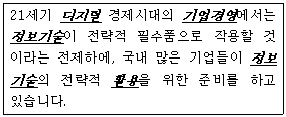
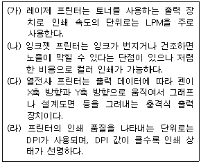
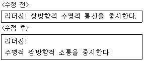
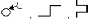
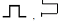
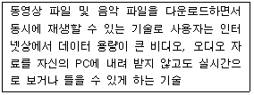

워드프로세서-(구-1급) (2012-03-17 기출문제)
1과목: 워드프로세싱 일반
1. 다음 중 행정기관이 업무처리 절차와 기준, 장비운용 방법, 그 밖의 일상적 근무규칙 등에 관하여 각 업무담당자에게 필요한 지침·기준 또는 지식을 제공하는 업무지도서 또는 업무참고서를 무엇이라고 하는가?
- 업무현황집
- 집무처리집
- 행정편람
- 직무편람
(정답률: 49%)

2. 다음 중 글꼴 구현 방식에 대한 설명으로 옳지 않은 것은?
- 벡터(Vector) : 글자를 곡선이나 선분의 모임으로 그린 글꼴
- 오픈타입(Open type) : 외곽선 정보를 사용하며 높은 압축율을 통해 파일의 용량을 줄인 글꼴
- 트루타입(True type) : Windows에서 기본으로 제공하는 글꼴
- 비트맵(Bitmap) : 글자의 외곽선 정보를 그래픽 소프트웨어에 제공하며 계단 현상이 발생한다.
(정답률: 51%)
3. 다음 중 공문서의 종류에 대한 설명으로 옳지 않은 것은?
- 지시 문서에는 훈령, 지시, 예규, 일일 명령 등이 있다.
- 민원문서에는 행정기관이 내부에 비치하면서 업무에 활용하는 대장, 카드 등이 있다.
- 공고문서에는 고시, 공고 등이 있다.
- 법규문서에는 헌법, 법률, 대통령령 등이 있다.
(정답률: 70%)
4. 다음 중 보기의 내용처럼 특정 단어들에 대해 특정 서식<기울임(이탤릭), 밑줄, 진하게>을 반복하여 적용하고자 할 때 가장 효과적인 방법은?

- 스타일(Style)
- 맞춤법 검사
- 문단 모양
- 워터마크(Watermark)
(정답률: 84%)
5. 다음 중 한자 입력 방법에 대한 설명으로 옳지 않은 것은?
- 한자가 많이 들어 있는 문서의 일부분 또는 전체를 블록 지정하여 모두 한글로 변환할 수 있다.
- 한자의 음을 모를 경우에는 부수 또는 총 획수 입력, 외자 입력 등으로 변환할 수 있다.
- 한자 사전이나 한자 목록에 들어 있는 한자 단어는 특정 영역에서 자동으로 변환할 수 있다.
- 한자의 음을 모르는 경우 검색 및 치환 기능으로 변환하여야 한다.
(정답률: 61%)
6. 다음 중 공문서의 접수, 처리에 대한 설명으로 옳지 않은 것은?
- 접수한 모든 문서는 접수일시와 접수등록번호를 전자적으로 표시하여야 한다.
- 문서과에서 받은 문서는 문서과에서 접수일시를 전자적으로 표시하거나 기록하고 지체 없이 처리과에 배부하여야 한다.
- 종이문서인 경우에는 접수인만 찍고 접수일시와 접수등록번호는 기록하지 않는다.
- 처리과에서 문서 수신, 발신 업무를 담당하는 사람은 접수한 문서를 처리담당자에게 인계하여야 한다.
(정답률: 75%)
7. 다음 중 표 작성에 대한 설명으로 옳지 않은 것은?
- 표를 일반 텍스트 형태로 바꿀 수 있다.
- 셀을 나누거나 합칠 수 있다.
- 표를 분리하거나 합칠 수 있다.
- 표에서는 평균, 합계 등을 구할 수 없다.
(정답률: 73%)
8. 다음 중 출력 장치에 대한 설명으로 옳은 것을 모두 고른 것은?

- (가), (나), (라)
- (나), (다), (라)
- (가), (다)
- (나), (라)
(정답률: 53%)
9. 다음 중 맞춤법 검사(Spell Check) 기능에 대한 설명으로 옳지 않은 것은?
- 작성된 문서의 내용과 내장된 사전과 비교하여 틀린 단어를 찾아주는 기능이다.
- 한글뿐만 아니라 영문에 대해서도 검사할 수 있다.
- 사전에 없는 단어는 사용자가 추가할 수 있다.
- 수식이나 화학식에서도 맞춤법 검사 기능을 이용한 오류 검사가 가능하다.
(정답률: 71%)
10. 다음 중 워드프로세서의 표시기능에 대한 설명으로 옳은 것은?
- 포인트는 화면을 구성하는 최소 단위로 1포인트는 보통 0.5mm이다.
- 자간이란 문자와 문자 사이의 간격을 의미하며 자간을 조절하여 가독성을 높일 수 있다.
- 줄(행) 간격은 페이지 단위로 이루어지기 때문에 문단 구분 없이 커서가 놓여 있는 페이지 전체에 영향을 미친다.
- 장평이란 문자의 가로 크기에 대한 세로 크기의 비율을 말한다.
(정답률: 58%)
11. 다음 중 스풀링(Spooling)에 대한 설명으로 옳지 않은 것은?
- 인쇄물을 주기억장치에 저장했다가 인쇄한다.
- 인쇄 중에 또 다른 문서를 불러들여 편집할 수 있다.
- 프린터의 종류에 따라서 스풀 기능을 사용하지 않고 인쇄할 수 있도록 설정할 수 있다.
- CPU의 효율적인 사용을 가능하게 한다.
(정답률: 40%)
12. 다음 중 출판문화의 변화에 대해 올바르게 나열한 것은?
- 사진 식자 → 활자 인쇄 → 전자출판 → 전자 통신 출판
- 사진 식자 → 활자 인쇄 → 전자 통신 출판 → 전자출판
- 활자 인쇄 → 사진 식자 → 전자 통신 출판 → 전자출판
- 활자 인쇄 → 사진 식자 → 전자출판 → 전자 통신 출판
(정답률: 63%)
13. 다음 중 DVD의 특징으로 옳지 않은 것은?
- 하드디스크에 비해 읽고 쓰는 속도가 빠르며 자료의 보존성이 뛰어나다.
- 저장되는 면은 트랙과 섹터로 구분되어 있으며, 이곳에 데이터를 저장한다.
- 광디스크의 일종으로 고해상도의 영상 화질과 뛰어난 음향을 제공할 수 있다.
- 멀티미디어 데이터를 저장하는데 적합하다.
(정답률: 44%)
14. 다음 중 전자출판의 특징으로 옳은 것은?
- 출판물의 제공은 가능하나 부가 정보 및 서비스는 불가능하다.
- 소리, 그림, 영상, 애니메이션 등을 함께 이용한 복합적인 표현을 할 수 없다.
- 다수의 사용자가 동시에 같은 내용에 접근하여 이용할 수 없다.
- 출판 내용에 대한 추가 및 수정이 신속하고, 용이하다.
(정답률: 67%)
15. 다음 중 전자출판에 사용되는 용어에 관한 설명으로 옳지 않은 것은?
- 디더링(Dithering) : 기존의 그림을 다른 형태로 새롭게 변형, 수정하는 작업을 의미한다.
- 오버프린트(Over Print) : 대상체의 컬러가 배경색의 컬러보다 짙을 때에 겹쳐서 인쇄하는 방법이다.
- 필터링(Filtering) : 작성된 그림을 필터 기능을 이용하여 여러 가지 형태의 새로운 이미지로 바꾸어 주는 기능이다.
- 클립아트(Clip Art) : 작업문서에 자주 사용되는 다양한 그림을 모아 둔 작은 그림의 모음집이다.
(정답률: 60%)
16. 다음은 차례(목차) 만들기 기능에 대한 설명이다. 옳지 않은 것은?
- 종류에는 제목 차례, 표 차례, 그림 차례, 스타일 차례 등이 있다.
- 책이나 보고서, 논문을 작성할 때 유용하게 사용된다.
- 차례 만들기의 결과는 보통 지정된 파일로 저장한다.
- 제목이 있는 곳에 특별한 표시를 지정해 주면 자동으로 목차를 만들어 주는 기능이다.
(정답률: 34%)
17. 다음 워드프로세서의 용어에 대한 설명 중 틀린 것은?
- 상황줄(status line) : 편집 화면의 여러 가지 정보가 표시되는 줄이다.
- 래그드(ragged) : 문서 정렬에서 한쪽이 정렬되어 있지 않은 상태를 말한다.
- 폼 피드(Form Feed) : 프린터에서 그 다음 줄로 종이를 밀어 올리는 기능이다.
- 상용구(Glossary) : 자주 사용되는 단어나 문자열을 약어로 등록시킨 후 필요 시 호출하여 사용하는 기능이다.
(정답률: 54%)
18. 다음과 같이 수정되었을 때 사용된 교정부호를 순서대로 올바르게 나열한 것은?


(정답률: 76%)
19. 다음 중에서 서로 상반되는 의미를 갖는 교정부호로 짝지어진 것은?

(정답률: 77%)
20. 다음 중 워드프로세서의 기능에 대한 설명으로 옳은 것은?
- 하드카피(Hard Copy)는 하나의 문서를 인쇄할 때 인쇄 속도를 훨씬 더 향상시키기 위해 사용하는 기능이다.
- 줄의 끝에 있는 영어 단어가 다음 줄까지 연결될 때 단어를 자르지 않고 단어를 다음 줄의 처음으로 옮겨주는 기능을 오른쪽 탭이라고 한다.
- 정렬(Sort) 기능을 이용하여 '가, 나, 다, 라, ....'순으로 정렬하는 것을 오름차순 정렬이라고 한다.
- 네트워크를 이용하여 필요한 문서를 상대방에게 분배, 전송하는 기능을 문서 병합 기능이라고 한다.
(정답률: 68%)
2과목: PC 운영 체제
21. 다음 중 한글 Windows XP를 부팅할 때 수행하는 POST 기능에 관한 설명으로 옳은 것은?
- ROM-BIOS에 있는 검사 프로그램으로 시스템을 실행하는 과정에서 하드웨어를 자동으로 검사하는 기능이다.
- 부트 디스크의 첫 번째 섹터에 저장되어 있는 프로그램으로 운영체제를 주기억장치에 적재하는 기능이다.
- 하나의 컴퓨터에 서로 다른 운영체제를 설치한 경우에 다중부팅을 수행하는 기능이다.
- 컴퓨터의 최소한의 장치만을 설정하여 부팅하는 기능이다.
(정답률: 45%)
22. 다음 중 한글 Windows XP를 부팅할 때 <F8> 키를 눌러서 표시되는 [Windows 고급 옵션] 화면에서 [안전 모드] 방식의 부팅 방법에 관한 설명으로 옳은 것은?
- 컴퓨터가 비정상적으로 작동될 때 컴퓨터에 발생한 문제를 해결하기 위하여 사용하는 방식으로 네트워크를 사용할 수 없다.
- 네트워크가 연결된 경우에 컴퓨터 관리자에게 해당 컴퓨터의 디버그 정보를 보내면서 부팅하는 방식이다.
- 마지막으로 시스템이 문제없이 실행되고 종료되었을 때 레지스트리 정보와 드라이버를 사용하여 부팅하는 방식이다.
- 시스템의 안전을 위하여 다중 부팅 선택 화면을 이용하여 부팅하는 방식이다.
(정답률: 48%)
23. 한글 Windows XP에서 사용하는 파일 시스템에 관한 설명으로 가장 옳지 않은 것은?
- Windows XP에서는 FAT, FAT32, NTFS 파일 시스템을 사용할 수 있다.
- FAT32는 FAT 보다 작은 드라이브를 사용할 수 있다.
- 드라이브나 파티션을 NTFS로 변환한 다음에 다시 FAT 또는 FAT32로 변환하기가 쉽지 않다.
- NTFS 파일 시스템으로 포맷된 하드 디스크 드라이브는 압축하여 디스크 공간을 절약할 수 있다.
(정답률: 35%)
24. 다음 중 한글 Windows XP의 [폴더 옵션] 창에 관한 설명으로 옳지 않은 것은?
- [제어판]에 있는 [폴더 옵션]을 선택하거나 폴더 창에서 [보기]-[폴더 옵션]을 선택하면 표시된다.
- [일반] 탭에서는 새로 여는 폴더의 내용을 같은 창 또는 다른 창에서 열리도록 지정할 수 있다.
- [보기] 탭에서는 숨김 파일이나 폴더의 표시 유무를 지정할 수 있다.
- [파일 형식] 탭에서는 컴퓨터에 등록된 파일 형식에 따라 연결 프로그램을 변경할 수 있다.
(정답률: 28%)
25. 다음 중 한글 Windows XP의 특징에서 플러그 앤 플레이(Plug & Play) 기능에 관한 설명으로 옳지 않은 것은?
- 컴퓨터에 새로운 하드웨어를 설치할 때 해당 하드웨어를 사용하는데 필요한 시스템 환경을 자동으로 구성해 주는 기능이다.
- 기존 컴퓨터 시스템과 충돌을 방지하는 기능을 수행한다.
- 이 기능을 수행하기 위해서는 하드웨어와 소프트웨어가 PnP기능을 지원하여야 한다.
- 컴퓨터 시스템이 오류가 발생했을 때 자동으로 복구하는 기능을 수행 할 수 있다.
(정답률: 50%)
26. 다음 중 한글 Windows XP에서 파일의 복사, 이동, 삭제에 관한 설명으로 옳지 않은 것은?
- 파일을 끌어놓기를 하여 복사할 경우에는 마우스 포인터 한쪽에 작은 사각형에 포함된 + 기호가 표시된다.
- 파일을 같은 디스크 드라이브의 다른 폴더에 마우스로 끌어놓기를 하면 복사가 된다.
- 선택한 파일을 삭제하려면 바로가기 메뉴에서 [삭제]를 선택하면 된다.
- 파일을 <Shift> 키를 누른 상태에서 다른 드라이브에 마우스로 끌어놓기를 하면 이동이 된다.
(정답률: 43%)
27. 한글 Windows XP에 설치되어 있는 하드웨어 장치 드라이버 정보를 보기 위한 방법으로 옳은 것은?
- [내 컴퓨터]의 바로 가기 메뉴에서 [속성]을 선택하고 [하드웨어] 탭에 있는 [장치 관리자]를 선택한다.
- [시작] 단추의 바로 가기 메뉴에서 [속성]을 선택하고 [설정] 탭에 있는 [장치 관리자]를 선택한다.
- 바탕화면의 바로 가기 메뉴에서 [속성]을 선택하고 [설정] 탭에 있는 [장치 관리자]를 선택한다.
- 작업 표시줄의 바로 가기 메뉴에서 [속성]을 선택하고 [하드웨어] 탭에 있는 [장치 관리자]를 선택한다.
(정답률: 39%)
28. 한글 Windows XP에서 [디스플레이 등록정보] 창의 [바탕 화면] 탭에 있는 [바탕 화면 사용자 지정]을 선택하였을 때 표시되는 [바탕 화면 항목] 창에서 설정하는 항목이 아닌 것은?
- 바탕화면의 기본 아이콘 표시
- 바탕화면에 있는 바로가기 아이콘의 대상 파일 변경
- 바탕화면에 표시되는 기본 아이콘 변경
- 바탕화면 정리 마법사 실행
(정답률: 34%)
29. 한글 Windows XP의 [그림판] 프로그램에서 [파일] 주메뉴의 하위 메뉴를 선택하여 할 수 없는 작업은?
- 스캐너 또는 카메라를 사용하여 이미지를 불러올 수 있다.
- 전자 메일을 사용하여 이미지 보내기를 할 수 있다.
- 그려진 그림을 바탕화면에 배경그림으로 지정할 수 있다.
- 다른 프로그램에서 작성한 모든 그림 파일을 불러와 현재 작업 중인 그림에 붙여넣기를 할 수 있다.
(정답률: 40%)
30. 다음 중 한글 Windows XP에서 [휴지통]에 관한 설명으로 옳지 않은 것은?
- [휴지통]에 들어있는 파일을 선택하여 밖으로 드래그하면 복원된다.
- [휴지통]에 들어있는 파일은 복원하기 전에는 그 내용을 볼 수가 없다.
- [휴지통]에 들어있는 파일은 이름을 변경할 수 있다.
- 3.5인치 플로피 디스크에서 삭제된 파일은 [휴지통]으로 들어가지 않는다.
(정답률: 56%)
31. 다음 중 한글 Windows XP에서 기본 프린터에 관한 설명으로 옳지 않은 것은?
- 사용할 프린터를 마우스 오른쪽 단추로 클릭한 다음 [기본 프린터로 설정]을 클릭한다.
- 현재 기본 프린터를 해제하려면 다른 프린터를 기본 프린터로 설정하면 된다.
- 인쇄 시 특정 프린터를 지정하지 않으면 자동으로 기본 프린터로 인쇄 작업이 전달된다.
- 기본 프린터는 하나 이상 지정이 가능하다.
(정답률: 63%)
32. 다음 중 한글 Windows XP에서 스피커와 관련된 [볼륨 조절] 창에서 할 수 있는 작업으로 옳지 않은 것은?
- [마스터 볼륨] 항목의 슬라이더를 올리거나 내려서 볼륨 크기를 조절할 수 있다.
- [음소거]를 지정할 수 있으며 MP3 나 WAV 파일을 재생할 수 있다.
- [옵션] 주메뉴의 [속성]을 클릭하여 표시되는 [속성] 창에서 특정 장치를 [볼륨 조절] 창에 포함하도록 설정할 수 있다.
- 왼쪽과 오른쪽 스피커 사이의 [밸런스] 조절을 할 수 있다.
(정답률: 50%)
33. 다음 중 한글 Windows XP의 [내 컴퓨터]에서 파일의 확장명을 보이게 하는 방법으로 옳은 것은?
- [폴더 옵션] 창의 [보기]탭에서 '알려진 파일 형식의 파일 확장명 숨기기' 항목의 체크 표시를 해제한다.
- [내 컴퓨터] 창의 빈 공간 부분의 바로가기 메뉴에서 [보기]-[파일 보기] 메뉴를 선택하여 체크 표시를 해제한다.
- 파일의 확장명을 보기 원하는 해당 파일의 바로가기 메뉴에서 [보기]-[파일 보기] 메뉴를 선택하여 체크 표시를 해제한다.
- [내 컴퓨터]의 등록정보 창에서 [일반] 탭에 있는 '알려진 파일 형식의 파일 확장명 보이기' 항목을 선택한다.
(정답률: 35%)
34. 한글 Windows XP에서 네트워크상에 있는 드라이브나 폴더를 공유하려고 할 경우에 해당 드라이브나 폴더의 등록 정보 창에서 설정할 수 있는 내용이 아닌 것은?
- 해당 공유 폴더를 공유 문서로 끌어넣기를 설정
- 공유 이름의 설정
- 특정 문자열을 이름으로 사용한 장치에 대한 찾기 기능의 설정
- 네트워크에서 해당 폴더의 공유와 공유 이름의 설정
(정답률: 44%)
35. 다음 중 한글 Windows XP의 [로컬 영역 연결 속성] 창에서 네트워크 구성 요소의 유형에 관한 설명으로 옳지 않은 것은?
- 클라이언트는 다른 컴퓨터나 서버에 연결하여 파일/프린터 등의 공유자원을 사용할 수 있다.
- 서비스는 파일 및 프린터 공유와 같은 기능을 제공한다.
- 방화벽은 인터넷에서 사용하는 컴퓨터를 액세스하는 것을 허용 또는 차단한다.
- 프로토콜은 사용자 컴퓨터가 다른 컴퓨터와 통신할 때 사용하는 언어이다.
(정답률: 34%)
36. 다음 중 한글 Windows XP의 네트워크 환경에서 [로컬 영역 연결]에 관한 설명으로 옳지 않은 것은?
- 네트워크 어댑터를 설치하면 Windows는 이 어댑터를 발견하고 로컬 영역 연결을 만든다.
- [네트워크 연결] 폴더에 나타나며, 기본적으로 로컬 영역 연결은 항상 활성화되어 있다.
- 로컬 영역 연결은 수동으로 구축되고, 활성화되는 유일한 연결 유형이다.
- 컴퓨터에 네트워크 어댑터가 여러 개가 있으면, 각 어댑터에 대한 로컬 영역 연결 아이콘이 네트워크 연결 폴더에 표시된다.
(정답률: 49%)
37. 한글 Windows XP에서 [시스템 도구]에 있는 [시스템 정보]에 관한 설명으로 옳지 않은 것은?
- 시스템 구성정보를 수집하여 연관된 시스템 항목을 표시할 수 있는 메뉴를 제공한다.
- 하드웨어 리소스에는 DMA, IRQ, I/O 주소 및 메모리 주소를 보여준다.
- 구성요소는 시스템 구성요소에 관련된 정보를 표시한다.
- 소프트웨어 환경은 컴퓨터에 설치된 모든 소프트웨어의 스냅샷(Snapshot)을 표시한다.
(정답률: 50%)
38. 한글 Windows XP의 [작업 표시줄 및 시작 메뉴 속성] 창에서 시작 메뉴에 [내 최근 문서] 메뉴 항목을 포함하도록 설정할 수 있는데, [내 최근 문서]에 관한 설명으로 옳지 않은 것은?
- 최근에 작업한 문서를 15개까지 보여준다.
- 문서 목록을 지우기 위해서는 목록을 선택한 후에 [Delete] 키를 누른다.
- 문서 목록을 클릭하면 연결된 프로그램이 실행되면서 해당 문서가 열린다.
- 문서 목록이 삭제되어도 원본 문서는 삭제되지 않고 남아 있다.
(정답률: 29%)
39. 한글 Windows XP에서 새로운 그래픽 카드를 설치하고 해당 장치의 드라이버를 업데이트하려고 할 경우에 설명으로 옳지 않은 것은?
- 가급적이면 기존 드라이버를 제거하고 표준 VGA 상태에서 새 그래픽카드 드라이버를 설치한다.
- [장치 관리자] 창에서 최신 버전의 드라이버를 업그레이드 할 수 있다.
- 자동으로 인식되지 않는 경우에는 [제어판]에 있는 [새 하드웨어 추가]를 이용하여 설치할 수 있다.
- 설치된 그래픽 카드의 드라이버는 [제어판]에 있는 [프로그램 추가/제거]를 이용하여 변경할 수 있다.
(정답률: 40%)
40. 다음 중 한글 Windows XP에서 자주 사용하는 응용 프로그램을 시작 메뉴의 상단에 있는 고정된 항목 목록에 표시하는 방법으로 옳은 것은?
- [내 컴퓨터]의 바로가기 메뉴에서 [등록정보]를 선택하여 설정한다.
- [Windows 탐색기]의 바로가기 메뉴에서 [등록정보]를 선택하여 설정한다.
- 바탕 화면의 바로가기 메뉴에서 [속성]을 선택하여 설정한다.
- 마우스를 사용하여 해당 프로그램을 [시작] 단추 위로 끌어다 놓는다.
(정답률: 42%)
3과목: 컴퓨터 및 정보활용
41. 다음 용어에 대한 설명 중 옳지 않은 것은?
- 통신 소프트웨어 : 통신에 필요한 모뎀 제어, 송/수신 자료처리, 파일 전송, 단말기 에뮬레이션의 기능 등을 제공하는 소프트웨어이다.
- 모뎀 : 컴퓨터의 디지털 신호를 아날로그 신호로 바꾸어주는 변조 기능과 전화선을 통해 들어오는 아날로그 신호를 다시 디지털 신호로 바꾸어주는 복조 기능을 제공한다.
- 전송속도 : Bytes Per Second 단위를 사용하며 데이터 통신에서 2,400bps의 경우 초당 2,400 글자가 전송되는 것이다.
- 채팅 : 2인 이상의 통신망 사용자가 대화를 나누는 것이다.
(정답률: 50%)
42. 다음 중 수학적으로 설계한 가상의 컴퓨터로 현대 컴퓨터의 논리적 모델이 된 것은?
- EDSAC
- 튜링기계
- UNIVAC I
- 바베지의 계산기
(정답률: 33%)
43. 다음은 데이터베이스에 대하여 장단점을 설명한 것이다. 단점에 해당하는 것은 무엇인가?
- 데이터의 무결성이 증가한다.
- 데이터에 대한 보안성이 향상된다.
- 질의어를 통하여 데이터에 대한 접근이 용이하다.
- 데이터의 복구가 어려워진다.
(정답률: 64%)
44. 다음 중 RISC 프로세서의 특징으로 옳지 않은 것은?
- 200 내지 300 개의 명령어 집합으로 이루어진다.
- 실행 속도를 높이려는 시도에서 개발되었다.
- 애플사의 PowerPC, Power Mac G3, Power Mac G4 등의 컴퓨터에서 사용되고 있다.
- 일반적으로 같은 공정으로 생산된 CISC 프로세서에 비해 전력소모가 작다.
(정답률: 35%)
45. 다음 중 컴퓨터 바이러스에 대한 설명으로 가장 거리가 먼 것은?
- 네트워크를 통해 바이러스에 감염될 수 있으므로 공유 폴더 관리를 철저히 한다.
- 일반 문서는 바이러스가 감염되지 않고, 실행 파일에만 바이러스가 존재한다.
- 하드웨어의 성능에 영향을 미칠 수 있다.
- 전자우편의 첨부 파일을 통해서 바이러스가 침투할 수 도 있다.
(정답률: 70%)
46. 다음 중 JPG 파일의 특징으로 옳은 것은?
- 저작권 비용 문제로 사용하기 어려운 GIF를 대체하기 위해 개발되었다.
- CAD 응용 프로그램에서 사용되는 형식이다.
- 풀 컬러(full-color)와 흑백 이미지의 압축을 위해 고안되었다.
- 움직이는 에니메이션 표현을 할 수 있다.
(정답률: 49%)
47. 다음 중 컴퓨터프로그램보호법의 제정목적이 아닌 것은?
- 컴퓨터 프로그램을 저작물로 인정하고, 일반 저작권과 같은 권리를 보장한다.
- 창작된 프로그램의 공정한 이용과 유통을 촉진한다.
- 새로운 프로그램의 창작을 유도하여 프로그램 산업과 기술을 진흥한다.
- 외국인의 프로그램을 적절히 보호하는 동시에 사용을 제한한다.
(정답률: 66%)
48. 다음은 동기식 전송 방식에 대한 설명이다. 옳지 않은 것은?
- 동기식 전송 방식은 한 번에 한 글자씩 전송되며, 시작 비트(start bit)와 정지 비트(stop bit)를 갖는다.
- 동기식 전송 방식은 한꺼번에 미리 정해진 블록만큼 전송(문자열 방식)하는 방식이다.
- 동기식 전송 방식에는 문자 동기 방식과 비트 동기 방식이 있다.
- 동기식 전송 방식은 송신기와 수신기의 동기를 위한 동기문자를 사용한다.
(정답률: 36%)
49. 다음 중 통신신호 세기의 레벨을 나타내는 단위로 옳은 것은?
- 헤르츠[Hz]
- 데시벨[㏈]
- 비피에스[bps]
- 보오[Baud]
(정답률: 36%)
50. 다음 중 멀티미디어를 활용한 서비스로 가장 거리가 먼 것은?
- 주문형 비디오
- 가상 현실
- 화상 통신 회의
- 다자간 문자 채팅
(정답률: 49%)
51. 다음 중 CD의 형식에 관한 설명으로 옳지 않은 것은?
- CD의 표준은 필립스사와 소니사에 의하여 주도되었다.
- CD-R은 여러 번 기록할 수 있다.
- CD-ROM 규격에는 에러정정기능과 관련하여 저장모드 1이 있다.
- CD-I는 TV 스크린에 화면을 구현할 수 있다.
(정답률: 44%)
52. 이산적인 데이터만을 취급하며 기억 및 논리 연산 기능을 갖추고 있는 컴퓨터는?
- 디지털 컴퓨터
- 아날로그 컴퓨터
- 하이브리드 컴퓨터
- 파스칼의 기계식 계산기
(정답률: 46%)
53. 다음 중 통신 프로토콜에 대한 설명으로 옳은 것은 ?
- 컴퓨터 통신을 위한 통신 규약
- 컴퓨터 내의 정보관리에 대한 규약
- 컴퓨터를 이용한 법규 제정
- 컴퓨터 해킹방지 규약
(정답률: 63%)
54. 다음 중 자기디스크의 데이터 액세스 시간(Access Time)을 바르게 나타낸 것은?
- 디스크 데이터 액세스 시간 = 위치 설정 시간(Seek Time) + 회전 대기 시간(Latency Time) + 사이클 시간(Cycle Time)
- 디스크 데이터 액세스 시간 = 위치 설정 시간(Seek Time) + 회전 대기 시간(Latency Time) + 데이터 전송 시간(Data Transfer Time)
- 디스크 데이터 액세스 시간 = 실행 시간(Execution Time) + 접근 시간(Access Time) + 대기시간(Waiting Time)
- 디스크 데이터 액세스 시간 = 유휴 시간(Idle Time) + 판독시간(Read Time) + 데이터 전송 시간(Data Transfer Time)
(정답률: 47%)
55. 다음 중 성격이 다른 시스템 소프트웨어는 어느 것인가?
- 링커(Linker)
- 어셈블러(Assembler)
- 컴파일러(Compiler)
- 인터프리터(Interpreter)
(정답률: 53%)
56. 다음 중 운영체제의 기본 역할과 가장 거리가 먼 것은?
- 메모리 관리
- 사용자 인터페이스 제공
- 디지털 영상 편집
- 파일 관리
(정답률: 61%)
57. 다음 보기에서 설명하는 내용에 해당하는 것은?

- 스트리밍(Streaming)
- 다이렉트 엑스(DirectX)
- 액티브 엑스(ActiveX)
- 인터레이싱(Interlacing)
(정답률: 70%)
58. PC를 업그레이드하려고 할 때 고려해야 할 사항으로 옳지 않은 것은?
- 하드 디스크의 경우 E-IDE, SATA 또는 SCSI 방식인지 알아보아야 한다.
- 586을 Core2Duo로 업그레이드하려면, CPU만 교체해 주면 된다.
- 메모리를 업그레이드하는 경우 자신의 PC의 메모리가 몇 핀(Pin)짜리인지 살펴보고 적당한 것을 선택한다.
- 자신의 컴퓨터를 업그레이드할 때 어떤 이득이 있는지 면밀히 검토해 보고 업그레이드하여야 한다.
(정답률: 56%)
59. 다음 중 빛의 반사 작용을 이용해서 사진이나 그림 등을 디지털 데이터로 변환하는데 사용되는 입력장치는?
- 태블릿
- 디지타이저
- 스캐너
- 플로터
(정답률: 61%)
60. 다음 중 암호화 기법과 가장 거리가 먼 것은?
- 패리티 점검
- 비밀키
- 공개키
- 디지털 서명
(정답률: 46%)